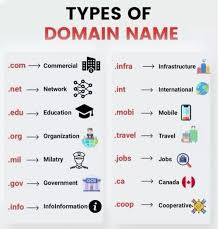

http://www.awbc.com/info/regesstepp/index.html
 (1).jpg)
Is a whole set of related protocols and tools that help computers to communicate with each other.
Some that are used on the internet include:
SMTP – for sending email messages.
FTP – allows files to be easily copied to and from remote sites.
A unique numerical address assigned to every machine on the Internet.
The IPv4 address is a 32 bit binary number normally represented as 4 decimal values i.e. octets. Each octet represents 8 bits in range from 0 to 255 separated by decimal points. This method of notation is called the dotted decimal notation e.g. 216.27.61.137
IPv6 addresses are written as eight 4-digit, hexadecimal numbers separated by colons, which represent 16 bits each (for a total of 128 bits).
To guarantee world-wide unique addresses, IP addresses are licensed from Network Information Center (NIC). An IP address and its subnet mask perform the following functions:
Enable the system to process the receipt and transmission of packets.
They specify the device’s local addresses.
They specify a range of addresses that share the cable with the device.
This is a unique name that identifies a web site. It is an alpha-numeric representation of the IP address. The characters are separated by dots and correspond to an IP address e.g. www.strathmore.edu IP addresses are not user friendly and could cause typing errors; the domain name system (DNS) was created so people would not have to remember several confusing numbers. Domain names enable short, alphabetical names to be assigned to IP addresses. They are easier to remember and to work with than an IP address and are informative and convenient to people.

An identifier for the location of a document on a web site
A basic URL:
http://www.awbc.com/info/regesstepp/index.html